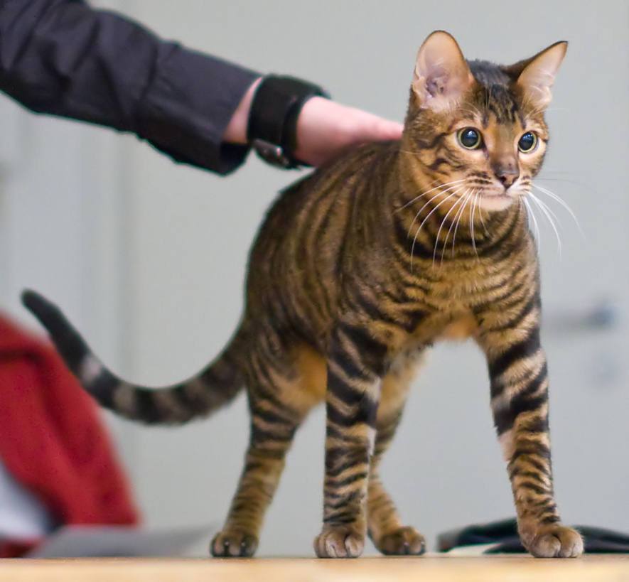

The Toyger cat is a shorthair resembling a tiger. They are very friendly and outgoind and are very athletic. While they might look like a tiger, they don't have any tiger blood in them, they are a fully domestic cat. They tend to vocalize a lot when they want or need something. They fur patterns are always random and unique unlike some other cats.
